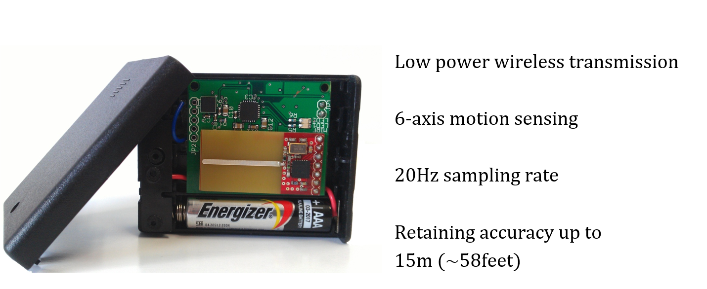
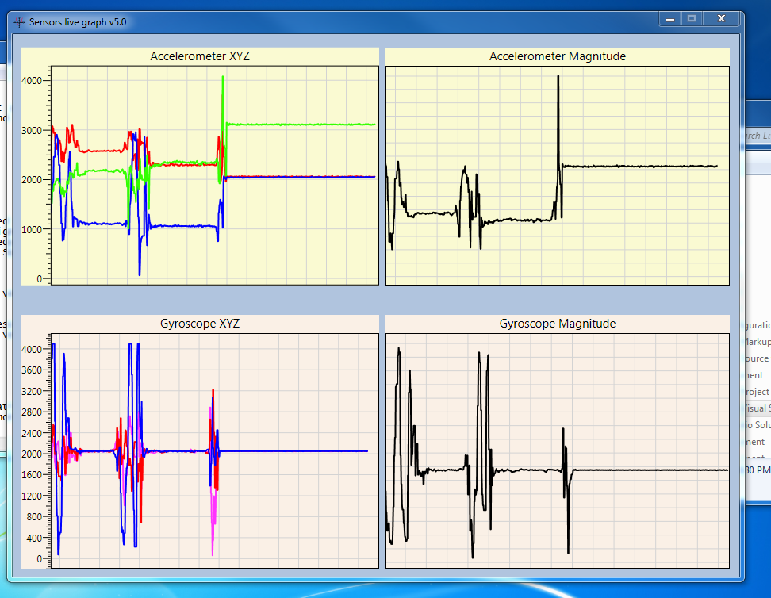
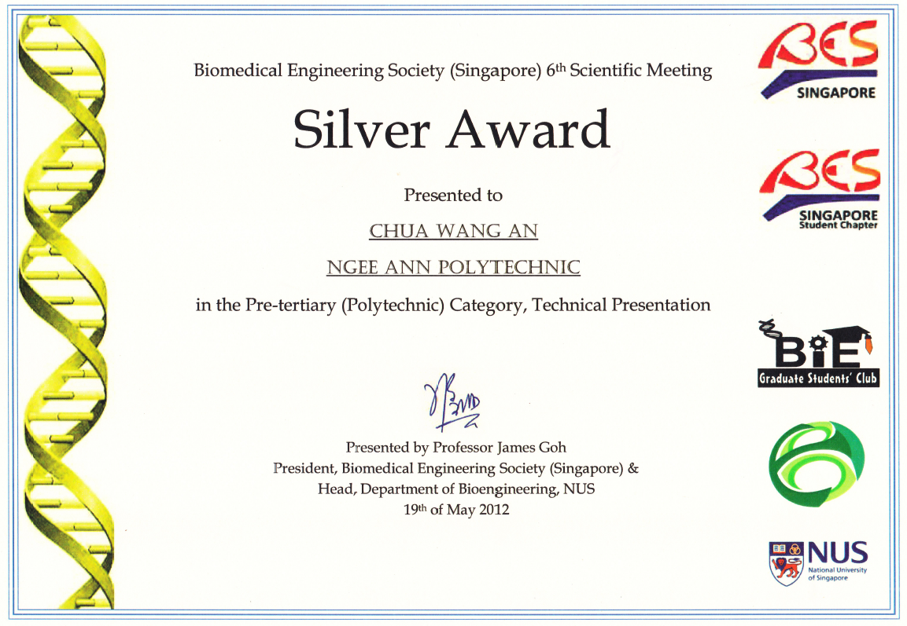
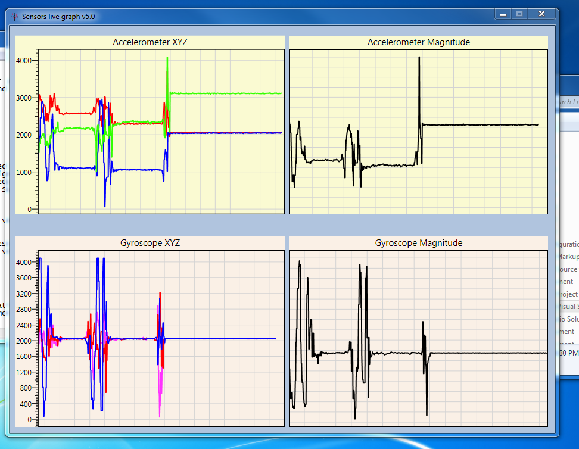
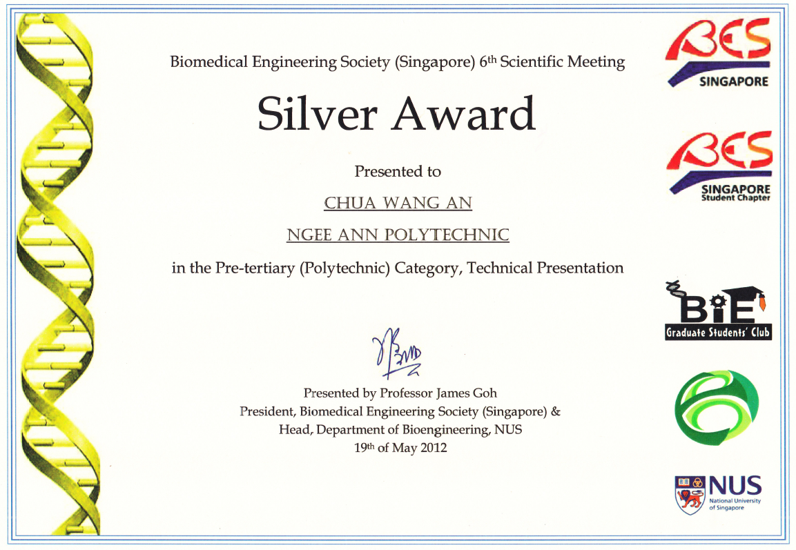

ABOUT THE PROJECT
Biomedical Engineering Society (BES) Singapore held its 6th Scientific Meeting (BES6SM) on 19th of May 2012 in National University of Singapore(NUS).
BES6SM is a symposium organized by students for the students of Junior college, Polytechnic, Undergraduate and Graduate schools. Students and professionals are welcome to attend and present their reseach work.
Project Entry: Wearable Sensors for fall detection in elderlies




Final version of the prototype (Compact unit)

Analysis of the data to detect fall(s)
Teammates

Silver Award